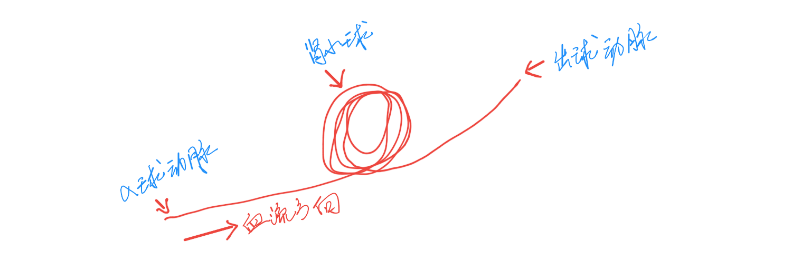

这不，万恶的资本主义商业领袖苹果公司不日又要推出他们今年的新旗舰「爱疯7」了，各种关于新机型的剧透在科技类网站已经屡见不鲜，各种相关群里哭着喊着要卖肾的小伙伴们又开始骚动起来了。当然了，我们今天的主角不是「疯7」，而是肾脏。我会以科普的方式，给大伙儿好好地介绍介绍这老是被吵嚷着要卖掉的器官－－肾脏！
曾几何时你又没有好奇过自己的肾脏是怎么工作的？为什么这玩意儿会有两个？假如你在看电影的时候，灌下了一大杯苏打饮料（八成还干掉了一大桶爆米花），突然有点想要撒尿的感觉，要是不巧的是这时候电影里正好有个货在吹口哨，估计你会忍不住起身去上厕所，而之所以会发生这一切，可以说就是我们的肾脏发挥了作用，不过你会不会在这时候产生疑问，它到底是如何产生需要我们排出去的尿液的呢？
从下面这幅图片上我们可以看到肾脏刚好位于肚脐附近，实际上的位置要靠后一点，它们的大小与你的拳头差不多，而且幸运的是有两个喔。肾脏从心脏获得血液，心脏的大小也和拳头差不多，它向全身输送血液，有些向上流向大脑，也有些分支向下到达腿部，而当然也有分支流入肾脏。而肾脏就会过滤这些血液并形成尿液，尿液就是身体想排出的废物，尿液会积聚到膀胱里，直到去上厕所才排出体外。
我们进一步来看一下肾脏的工作细节。每一个肾，都连接一个含氧血管或者说一条动脉，动脉中含有血液中的所有物质，包括一些营养物质，比如蛋白质、氨基酸、葡萄糖、电解质等，也包括一些碳水化合物等等构成我们人体的物质，当然动脉里含有氧气，也有一些细胞呼吸产生的废弃物，我们需要把这些废弃物排出去，比如有毒的物质、尿素、多余的电解质（像钠离子，钠太多会得高血压）等。
常识上来说，某个器官有一条动脉流入，就应该有一条静脉流出，来使血液流回心脏。那么肾脏的工作就是确保你动脉血液到达静脉时其中的营养物质还存在并且集中在一起，吸收动脉血带来的所有废弃物，并保留下来，以确保这些东西没有进入静脉，在这个过程中氧气被肾脏的组织大量的消耗掉，只有少量的氧气进入到静脉中。在收集这些废料的过程中，肾脏会高效地产生尿液。那么到底是什么把动脉和静脉连接起来了呢？其实这当中发生的事情正是肾脏如此神奇的原因。
肾脏奇特的原因在于它有两个毛细血管床。我想大多数人应该听说过毛细血管对吧？毛细血管床连接了动脉和静脉，氧气可以从这里流通，营养物质也可以流入。这些毛细血管有两个名称，第一个被称为直小血管，它主要负责把氧气输送到肾脏，而另一套毛细血管被称为管周毛细血管网，主要负责收集肾脏需要过滤的营养物质。
正是由于这些大量的毛细血管的存在使得肾脏在任何时刻都能装载你全部血液的22％，事实上每分钟约有1.1升的血液流经肾脏，而一般正常人体内的血液为5升左右，这就意味着五分钟内，所有的血液都会流经肾脏，这真是相当的厉害。所以，我们有必要进一步了解肾脏工作的细节。
请看下面的肾脏解剖示意图，血液会通过肾动脉流入，并最终形成尿液从输尿管流出，详细来讲，当血液进入肾脏，它们通过肾动脉进入，之后肾动脉会分散开，形成另一套网络，在这里血液会被过滤，而流出的滤液会被处理，里面的一些离子以及水会被重吸收，这些被重吸收的物质会被集中到肾静脉，静脉会把重吸收的营养物质带回血液，进而到达它们该去的地方。而这种过滤和收集正是下面我们要详细给大家展示的肾脏的两个主要功能。
肾脏由大约一百万个一个最小功能单元构成，我们称之为肾元。肾元的主要功能正是负责过滤和收集，肾元位于肾脏的两个区域，一个是外侧的区域，我们可以认为这是肾脏的外壳，称之为肾皮质，另一个是内部的区域，称为肾髓质。所以，肾元看上去会在皮质和髓质之间来回穿梭，它位于哪里决定了它是否需要重吸收重要的物质，还是允许一些物质被吸收到尿液中。对于尿液的吸收，这里还有一些紧挨着髓质的小东西，它们先收集尿液，这也是尿液第一次以尿的形式出现，它被称为肾盏，多个这种结构在一起，就形成了肾脏的中心区域，被称为肾盂，它只是所以肾盏的集合体。一旦你的肾盂里有了尿液，它就会从输尿管流出去，离开肾脏，把尿液输送到膀胱，这就是肾脏的解剖结构。
我们对肾脏的解剖学结构已经有了不错的初步认识，我们知道了肾脏是如何构成的，现在，我们要更进一步，来了解其中的一些重要的细节。我们最先讨论的是肾元，它是肾脏过滤和收集功能的最小单位。肾元的第一个部位被称为肾小球，它接受从肾动脉伸出的分支，这个分支我们称之为入球动脉，而肾小球就是一个相对比较呆的结构，这里存在大量的回旋，然后从另一个动脉分出来，我们把这个出来的动脉称之为出球动脉，意思就是我们已经离开了肾小球。
「下面几幅手绘的示意图，请自行忽略丑陋的鸡爪字体」
肾小球是过滤发生的主要地点，也就是在这里吸收来自肾动脉的血液，然后形成一堆液体，肾小球从这里吸收一些离子、水和废弃物，其中废弃物和多余的离子我们是要排出去的。也就是说肾小球会漏出一些经过过滤的液体，流出来的液体被收集在了一个小容器里，这个小容器以一个英国科学家的名字命名，我们称之为鲍氏囊（肾小囊），它的内部是空腔，从肾小球漏出来的滤液就被收集在这里（肾小球和肾小囊构成肾小体）。这时候，有的小伙伴们可能会有疑问，为什么这里会有液体漏出来呢？

血液里一般会有红细胞、白细胞、血小板，还有一些相当大的蛋白质（它不会漏到鲍氏囊里），还有一些别的东西比如离子，更小的蛋白质（氨基酸），还有葡萄糖，这些东西会漏出去。那么这些物质具体是怎么进入鲍氏囊的呢？其实我们的血管和我们体内的任何组织一样，都是由细胞构成的，组成这条血管的细胞，它们被称为内皮细胞，这些内皮细胞的特别之处是它们上面有孔，这些孔允许一些小东西如钠、氨基酸及葡萄糖漏出去，有些孔实际上比较大，容许一些蛋白质漏出去，但是蛋白质还是不能出去，因为还存在另一层东西，它们位于血管的这些内皮细胞之间，可以说是另外一层膜，它不是一个完整的屏障，它是半透性的，也就是有些物质能通过，我们称之为基膜，这里的基膜确保只有小物质能通过。
接着这些小离子、氨基酸、葡萄糖和水分子会从鲍氏囊进入肾元的其他部分。首先进入的是下面这个东西，它的形状看上去也是绕来绕去的，而且它离肾小球很近，根据这两个特征，我们称它为近曲小管，近曲小管在重吸收离子方面相当重要，在这里约重吸收65％的重要营养物质，比如钠、氯、氨基酸还有水等。
紧接着近曲小管的是这样的一个环，它深入肾脏然后又回到上面，这整个结构被称为亨利氏环，它有两个部分，一个被称为降支，降是因为它深入到了肾脏的内部，另外一部分相应的被称为升支。之前说到过肾脏的这两个主要部分，其中一个是肾皮质，另外一个是肾髓质，其中肾髓质的含盐量相当高，因为大量的离子吸收过程在这里发生。亨利氏环的降支和升支重吸收的物质很不一样，降支重吸收水分，升支重吸收的是钠、氯、钾之类的物质，这样就造就了一个相当漂亮的系统，它被称为逆流倍增作用。逆流指的是降支和升支的方向相反，倍增意味着当升支重吸收离子，并使髓质含盐量变得更高时，就会导致降支被动重吸收水分量倍增。

肾元的下面一个部分有些像转回来的环，而且刚好又触碰到了这里的肾小球，很像近曲小管，我们称之为远曲小管，远曲小管主要也是负责一些离子的吸收。远曲小管和肾小球碰触的部位还有一个叫作肾小球旁器的东西，主要作用是控制血压。远曲小管之后是集合小管或称之为急尿管，它收集肾元中的剩余物质，需要注意的是会有很多的远曲小管都汇集到这个集合小管，实际上在集合小管中还会重吸收很多物质，在皮质部分吸收的主要是水，而在髓质部分会吸收尿素。尿素是我们主要要排出体外的废弃物，但是有时肾脏也会保留尿素，来增大髓质的摩尔渗透压，以驱动亨利氏环中水分的重吸收。
现在我们可以看到，我们几乎重新吸收了所有好的物质，但是没有看到从哪里流回到静脉里，其实出球小动脉提供了达到这个目的的方式。像所有细动脉一样，它形成了更小的分支，更小的毛细血管，这些毛细血管会跨过肾元，并且吸收所有之前我们提到的所有营养物质，这些毛细血管几乎铺满了所有地方，我们称之为管周毛细血管，到这里我们几乎耗尽了所有的氧气，重吸收了有用的物质，然后就会流入肾静脉，肾静脉会把这些带回身体的其它部位，剩下的就只有集合管里的液体，也就是我们的尿液。集合小管是最先产生尿液的地方，然后尿液会被运输到肾盏，然后被进一步尿出去。
为什么肾脏要做这些呢？它为什么要过滤并收集尿液呢？肾脏所有这些结构的整体目的是什么？其实，可以简单的把这些问题的答案总结为肾脏的存在就是为了维护我们身体内环境的稳态。内环境稳态指的就是身体的当前的一个正常的状态，它可以表示你血液的PH，肾脏会通过调节血液中氢离子量来维持血液的PH；它也可以指你的血压，因为你体内有很多盐，你很有可能从医生那里听过，如果摄入了过多的盐分，你会患高血压，所以你的肾脏要确保你排出合适数量的钠和氢离子，以使你不患高血压；肾脏也在维持你内环境稳态中的其他方面，比如渗透压摩尔浓度。
好啦，了解完肾脏工作的细节之后，最后再来回答大家或许更关心的问题，我们为什么会有两个肾？可不可以卖掉一个肾呢？
从生物学来讲，之所以我们会有两个肾，是因为肾是从中胚层分化来的，而从中胚层分化出来的所有组织，很多是呈轴对称的。我们先来看看中胚层是什么鬼？ 大家都知道，我们都是从受精卵一步一步发育变来的。受精卵就是一个细胞，长这样：
然后这个细胞会一点一点演变出很多细胞，主要变化内容就是两方面，一方面细胞数量变多，另一方面细胞种类变多。然后这些小细胞跑到各自的工作岗位上站好，这时候我们就不是受精卵了，是胚，而这个胚就可以分为内胚层，中胚层和外胚层。
从内胚层发育而来的主要是我们人最里面的机构，主要是消化道，消化腺，气管，肺的上皮组织，甲状腺，甲状旁腺，胸腺，膀胱，阴道等，可以看出，这一层的发育出东西大部分都只有一个。
外胚层主要发育的是我们最外面的组织，包括表皮，毛发等等，而且最主要的脑，脊髓也是它发育的。这些组织除了脑子和脊髓，其他的基本上就是包裹在我们身体的在外面的「皮囊」。
接下来说到中胚层，这一层主要负责生成骨骼，肌肉，血管，和泌尿，生殖系统。仔细想一下可以发现，这些组织都是对称的。所以我们可以得出这个结论，由于中胚层发育的特点决定人要长两个肾。
既然有两个肾脏，那么我们最后就来讨论讨论是不是有一个是多余的呢？
人体的组织器官，为了抗外界破坏，都有很多种保护机制。比如肝脏切掉某些部分之后还可以完全再生；皮肤的损伤也会自己修复；而像肺、肾脏，他们不能再生，于是就采用冗余的方法来保护自己。
通过上面那么长的篇幅，我们知道了肾脏就类似一个「血筛子」，负责净化我们的血液，排出多余物质。如果我们把肾脏比喻成一家大型工厂的话，那么我们可以把它想成有两家分厂，而且每家工厂都有100多万个员工（ 「肾元」 ）。所以员工总数一共就这200来万，没有地方可以招到新员工，而且一旦某些员工意外身亡了，也没法指望他们像肝细胞一样 「野火吹不尽，春风吹又生 」 。
当我们处于一个健康的身体环境下的时候，这200多万员工里，实际每天出勤上班的也就80万左右，这些员工平时自己倒倒班，生活也算轻松。但是如果不巧的是摊上一个喜欢没事就整点垃圾食品的主人，地沟油黑暗料理、三聚氰胺牛奶、糖精碳酸饮料啥的，这些员工的命运就不是那么的靠谱了，讲不定今天死几个，明天瘫痪几个，但是好歹数量还是够的，有可能一直到了了主人老死了，还有一百多万员工可以每天开工。
这时候，如果你心血来潮，觉得咱们既然富裕这么多，干脆卖掉一个厂，去换个别人厂的产品吧，或者说你亲戚家的两个厂都倒闭了，你得贡献一个出来应应急，那么问题就来了，我们得精打细算看看自己家里这点老本还够不够用。如果这时候每家厂加起来还有180万员工，除去一半，自己还有90万，那么正常生活的话，平时多注意休息休息，问题不大。
但是，本来就只剩这点了，为了保证完成组织上下达的过滤和收集任务，这些员工没日没夜的加班，基本上都排不到休息时间，要是平时不悠着点，搞得所有员工都罢工了，那你这个厂里没人干活的话，就算是到了尿毒症的时期了。我们有时候也可以这样理解，一些急性的肾病/肾炎属于短期工人罢工，如果处置及时，复工的概率还是很大，但是一旦进入到慢性期，您就看着他们一个个的积劳成疾最后累死过去，或是在环境恶劣的厂房里中毒死去，那么自己就只能干着急了。
说到了这里，你再回头仔细想想，我们怎么能不好好对待身体里的每一个「员工」？又怎么忍心轻易的让他们离我们而去呢？珍爱生命，让我们善待自己的身体吧。